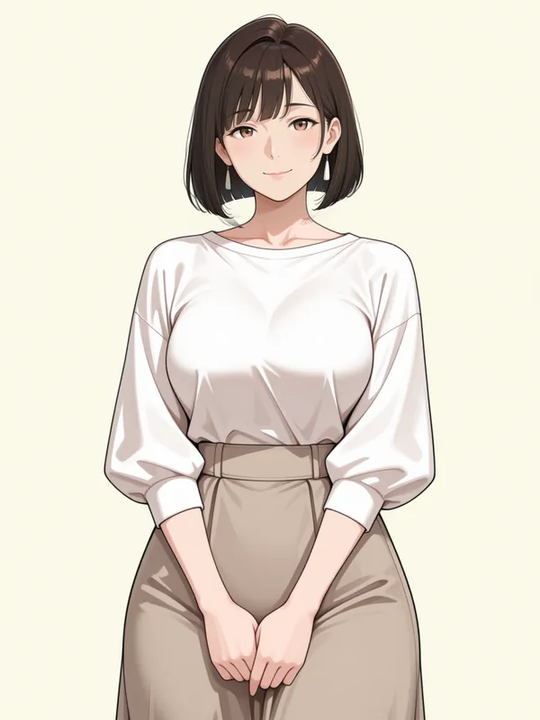

金髪ギャル
金髪ゆるふわロングがトレードマーク。ノリが良くて人懐っこい、場をぱっと明るくするムードメーカー。
AIで描いているオリジナルキャラクターたちと、
いま作っているゲームの記録です。
金髪ギャル
金髪ゆるふわロングがトレードマーク。ノリが良くて人懐っこい、場をぱっと明るくするムードメーカー。

黒髪ボブの大人女子
柔らかい物腰と、ふとした瞬間に見せる表情が魅力。風の強い日はちょっと要注意。

無自覚系の無表情さん
落ち着いていて媚びない、少し天然。本人は何も意識していないのに、なぜか目が離せない。

グラビアアイドル
見せ方を知り尽くした大人の余裕。控えめな妹・るいとは対照的な、華やかなお姉さん。

保健室の先生
メガネとショートカットがよく似合う、包容力たっぷりのお姉さん先生。不調も悩みも、笑顔で受け止めてくれる。

旅館の女将
黒髪のまとめ髪に和装が映える、上品で落ち着いた和風美人。老舗旅館を切り盛りしている。